Chairman
Joachim Yahalom, MD
Professor of Radiation Oncology, Memorial Sloan Kettering Cancer Center, New York, NY, USA
116 radiation oncologists, physicists and hematologists from around the world lead ILROG's guidelines, research and education.
Chairman
Professor of Radiation Oncology, Memorial Sloan Kettering Cancer Center, New York, NY, USA
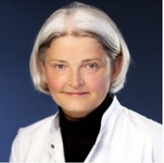
Vice Chairman, Director of Guidelines
Professor of Oncology, Rigshospitalet, Copenhagen University Hospital, Copenhagen, Denmark
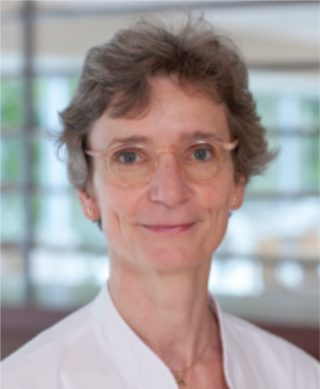
The Netherlands Cancer Institute, Antoni van Leeuwenhoek Hospital, Amsterdam, The Netherlands
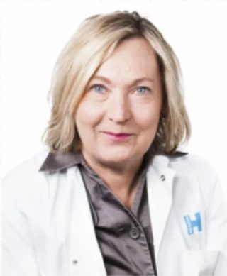
Rigshospitalet, Copenhagen University Hospital, PET & Cyclotron Unit and the Department of Radiotherapy, Copenhagen, Denmark
Guy's Cancer Centre, Guy's and St Thomas' Hospital, London, United Kingdom
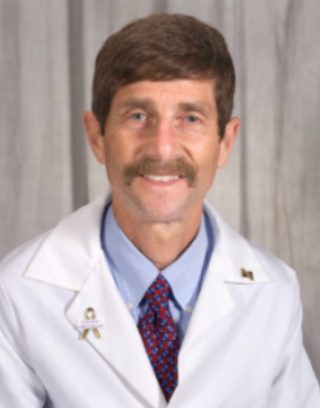
Vice Chair, Dept. of Radiation Oncology, University of Rochester Medical Center, Rochester, New York, USA

Director of Research
Department of Radiation Oncology, University of Texas MD Anderson Cancer Center, Houston, Texas, USA
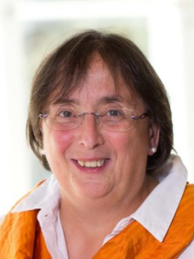
Medical University of Vienna, General Hospital of Vienna, Vienna, Austria
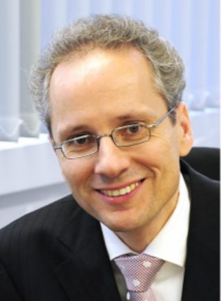
Head of the Department of Radiation Oncology, University of Munster, Munster, Germany

University of Toronto, Princess Margaret Cancer Centre, Toronto, Ontario, Canada
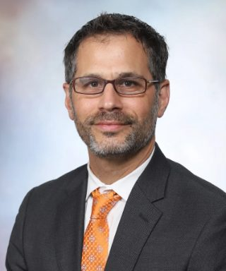
Department of Radiation Oncology, Mayo Clinic Florida, Jacksonville, FL, USA
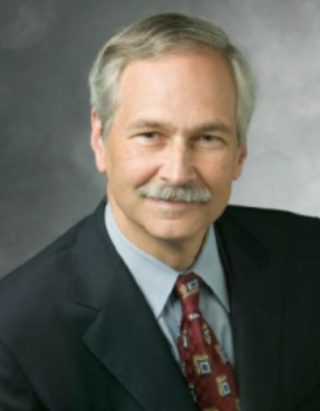
Department of Radiation Oncology, Stanford University, Stanford, CA, USA
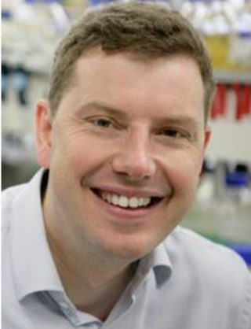
Manchester Cancer Research Centre, The Christie NHS Foundation Trust, Manchester, England, UK
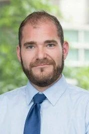
Department of Radiation Oncology, Memorial Sloan Kettering Cancer Center, New York, NY, USA
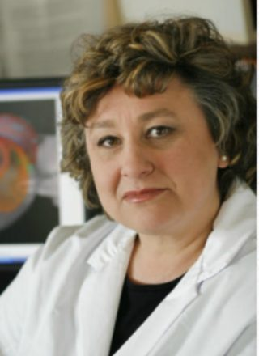
Department of Radiation Oncology, Institut Curie, Paris, France
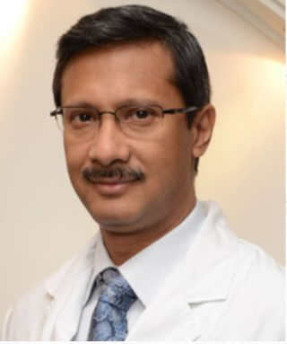
Attending, Department of Radiation Oncology, Tata Memorial Center, Mumbai, India
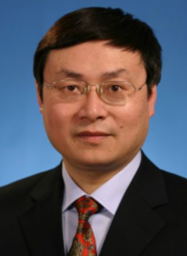
Cancer Hospital and Institute, Chinese Academy of Medical Sciences and Peking Union Medical College, Beijing, China

Head of Clinical Oncology & Radiotherapy, Guy's & St. Thomas' NHS Foundation Trust, London, England, UK
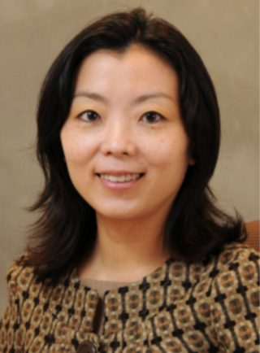
Dana-Farber Cancer Institute, Harvard Medical School, Boston, MA, USA
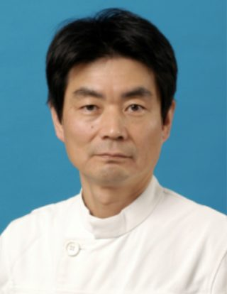
Department Director, Radiation Administration, Cancer Institute Hospital, The Japanese Foundation for Cancer Research, Tokyo, Japan
Assistant Professor, Department of Radiation Oncology, University of Texas MD Anderson Cancer Center, Houston, TX, USA
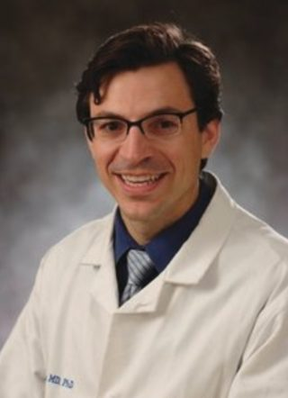
Director of Education
Department of Radiation Oncology, University of Pennsylvania, Philadelphia, PA, USA
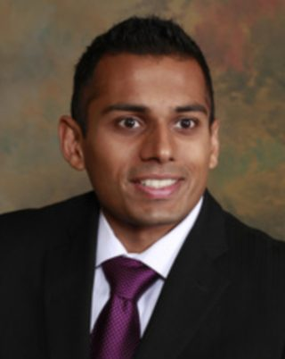
Rutgers Cancer Institute of New Jersey, Robert Wood Johnson Medical School, New Brunswick, NJ, USA
Peking Union Medical College (PUMC), Chinese Academy of Medical Sciences (CAMS), Beijing, P. R. China
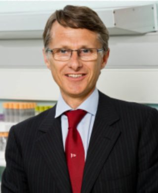
Chairman Radiation Oncology Department, University of Turin, Torino, Italy
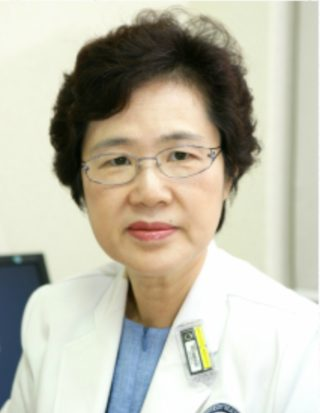
Yonsei Cancer Center, Yonsei University Health System, Seoul, Korea
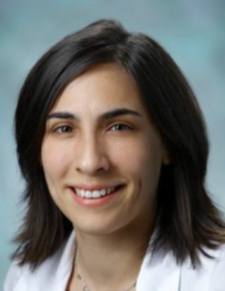
Department of Radiation Oncology and Molecular Radiation Sciences, Sidney Kimmel Comprehensive Cancer Center at Johns Hopkins, Baltimore, MD, USA
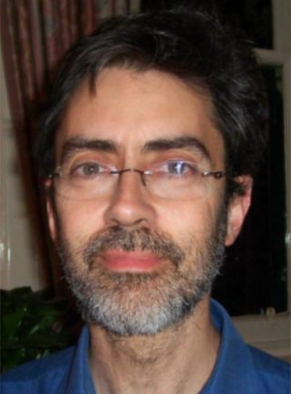
Department of Radiation Oncology and Cancer Imaging, Peter MacCallum Cancer Center, East Melbourne, Victoria, Australia
Assistant Professor, Department of Radiation Oncology, University of California San Francisco, San Francisco, CA, USA
Tata Medical Center, Kolkata
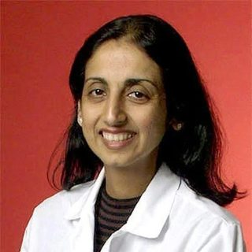
Saul A Rosenberg Professor of Lymphoma, Stanford Cancer Institute, Stanford, CA, USA
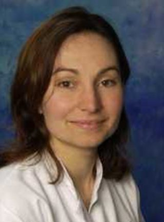
University of Oxford, Associate Professor, University of Copenhagen, Copenhagen, Denmark
Assistant Professor, Icahn School of Medicine at Mount Sinai, New York, NY, USA
Department of Radiation Oncology, USC Norris Comprehensive Cancer Center and Hospital, Los Angeles, CA, USA
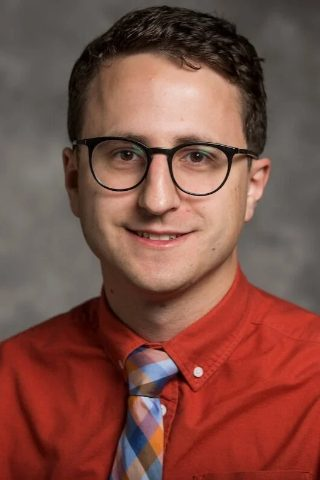
Department of Radiation Oncology, Winship Cancer Institute, Emory University
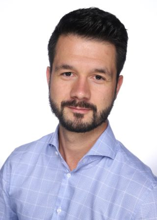
Department of Radiation Oncology and CyberKnife Center, University Hospital of Cologne, Germany, Reference Center Radiation Oncology, German Hodgkin Study Group
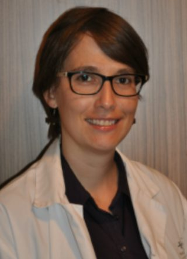
Hospital Maisonneuve-Rosemont, University of Montreal, Montreal, QC, Canada
Stanford University, Stanford, CA, USA
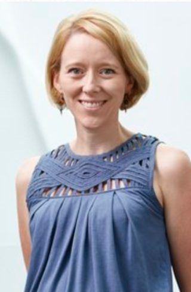
Consultant Radiation Oncologist, Peter MacCallum Cancer Centre, Melbourne, Australia
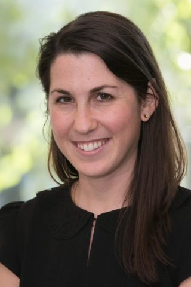
Department of Radiation Oncology, University of North Carolina School of Medicine, Chapel Hill, NC, USA
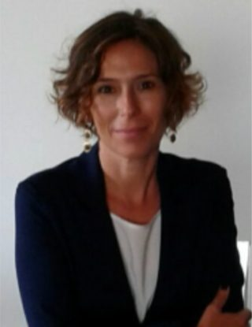
Institute of Biostructure and Bioimaging, Tommaso De Amicis, Napoli, Italy
Orlando Health UF Health Cancer Center
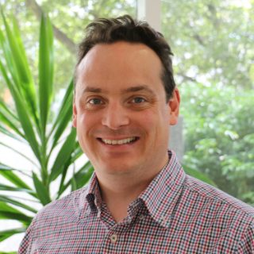
Consultant Clinical Oncologist, Oxford Cancer Centre, Senior Clinical Research Fellow, University of Oxford

Assistant Professor, Department of Radiation Oncology, City of Hope, Duarte, CA 91010
Oncology Institute of Southern Switzerland, Switzerland
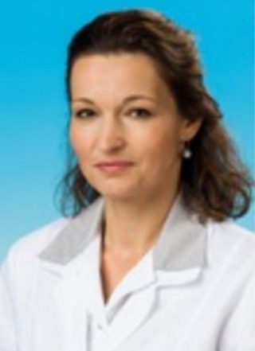
Institute of Radiation Oncology, 1st Faculty of Medicine Charles University and Hospital Na Bulovce, Prague, Czech Republic
HUG, University Hospital of Geneva, Geneva, Switzerland
University of Washington, Seattle, WA, USA
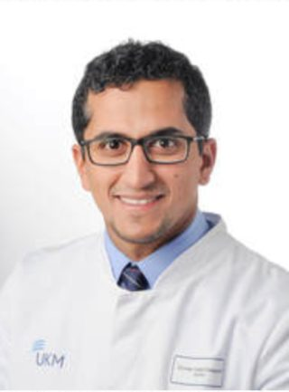
Consultant Radiation Oncologist, University Hospital Münster, Münster, Germany
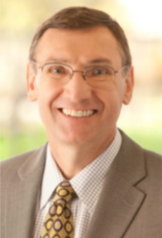
Professor, Department of Radiation Oncology, Nebraska Medical Center, Omaha, Nebraska, USA
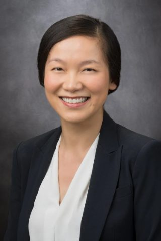
Assistant ProfessorMD Anderson Cancer Center, Houston, TX, USA
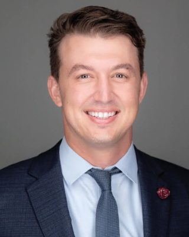
Department of Radiation Oncology, Moffitt Cancer Center, Tampa, FL
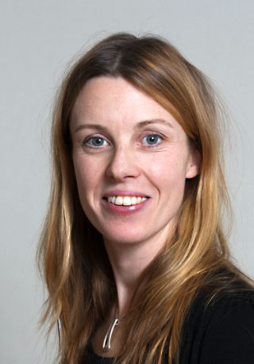
Uppsala Akademiska Sjukhus, Uppsala Universitet, Uppsala, Sweden
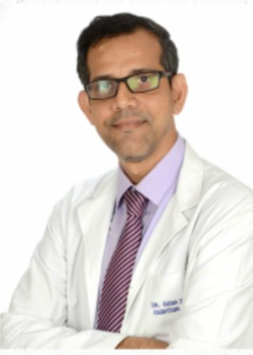
Clinician Scientist and Associate Professor, Radiation Oncology,Tata Memorial Centre, Mumbai , India
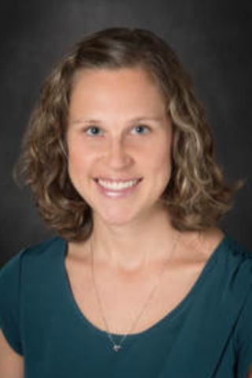
Assistant Professor, Department of Radiation Oncology, University of Texas MD Anderson Cancer Center, Houston, TX, USA
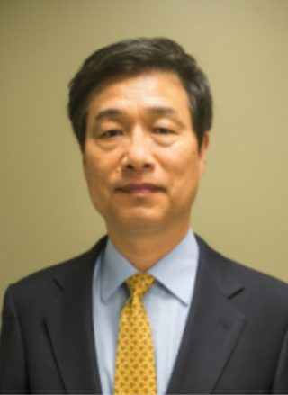
The University of Texas Health and Science Center at San Antonio and, Cancer Therapy and Research Center, San Antonio, TX, USA
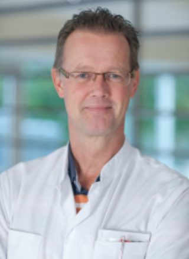
The Netherlands Cancer Institute, Antoni van Leeuwenhoek Hospital, Amsterdam, The Netherlands
Department of Radiation Oncology, Memorial Sloan Kettering Cancer Center, New York, NY, USA
Assistant Professor, Stanford Cancer Institute
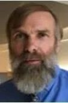
Consultant Clinical Oncologist, Mount Vernon Cancer Centre, Northwood, UK, Professor in Clinical Oncology, University of Manchester, Manchester, UK
Baylor Scott & White, Texas, USA
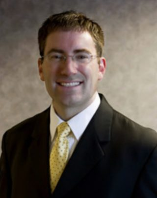
Associate Professor of Radiation Oncology, Duke University School of Medicine, Durham, NC, USA
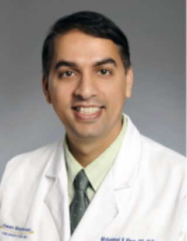
Department of Radiation Oncology, Winship Cancer Institute of Emory University, Atlanta, GA, USA
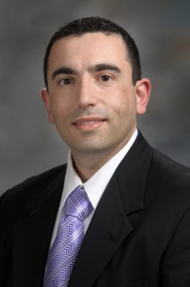
Department of Pathology and Microbiology, University of Nebraska Medical Center, United States
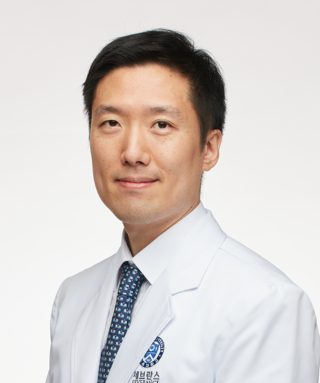
Assistant Professor, Department of Radiation Oncology, Yonsei Cancer Center, Heavy Ion Therapy Research Institute, Yonsei University College of Medicine
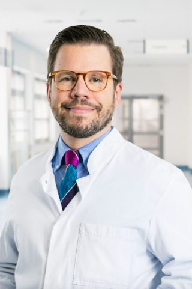
Head of the Department of Radiation Oncology, Clemenshopital Münster, Munster, Germany
Radiation Oncologist, Leiden University Medical Center, Leiden, The Netherlands
Assistant Professor of Radiation Oncology, City of Hope, Duarte, CA, USA
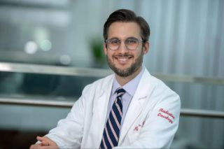
Instructor, Department of Radiation Oncology, University of Pennsylvania
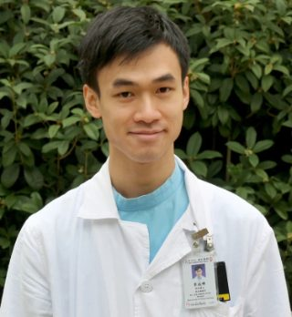
Clinical Oncologist, Department of Clinical Oncology, Tuen Mun Hospital, New Territory West Cluster, Hospital Authority, Hong Kong, China
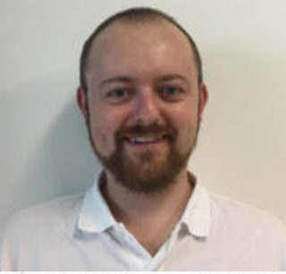
Department of Radiation Oncology, University of Torino, Torino, Italy
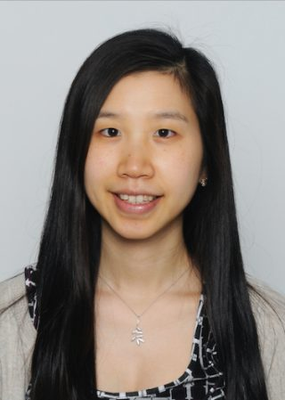
Department of Radiation Therapy, British Columbia (BC) Cancer Agency Vancouver Centre, British Columbia, Canada
Institut Curie, Paris, France
Department of Radiation Oncology, Peter MacCallum Cancer Centre, Victorian Comprehensive Cancer Centre
Radiotherapy Review Center (GHSG), CyberKnife Center, Cologne, Germany
University of São Paulo, São Paulo, Brazil
Assistant Professor, Department of Radiation Oncology, University of Texas MD Anderson Cancer Center, Houston, TX, USA
Professor of Radiation Oncology, Mayo Clinic, Jacksonville, FL, USA
Associate professor, Consultant, Experimental and Clinical Oncology, Department of Immunology, Genetics and Pathology, Uppsala University, Section of oncology, vo BOT, Uppsala University Hospital
NIHR Clinical Lecturer & Senior Radiotherapy Physicist, Guy’s and St Thomas’ NHS Foundation Trust, Medical Physics Research Fellow, University of Oxford, Honorary Lecturer, King’s College London
Clark Center for Radiation Oncology, Massachusetts General Hospital, Boston, MA
Department of Radiation Oncology, University of Pennsylvania
Copenhagen University Hospital
Professor of Radiation Oncology, University of Colorado Hospital, Aurora, CO, USA
Department of Radiation Oncology, University Hospital Münster, Münster, Germany
Department of Radiation Oncology, Shoreline Medical Center and Yale-New Haven Hospital, New Haven, CT, USA
Assistant Professor of Therapeutic Radiology, Smilow Cancer Hospital at Yale University, New Haven, CT, USA
Radiation Medicine Program, Princess Margaret Cancer Centre, Department of Radiation Oncology, University of Toronto
Royal Adelaide Hospital, Professor, University of Adelaide, Adelaide, South Australia
Stanford University, Stanford, CA, USA
Professor, Department of Radiation Oncology, Medical College of Wisconsin, Milwaukee, WI, USA
Fellow of MD Anderson Cancer center, Texas, USA, Fellow of Dana-Farber Cancer institute, Harvard University, Mass, USA., Lecturer of Clinical Oncology, Alexandria School Of Medicine
Professor, Department of Radiation Oncology, Saitama Medical University International Medical Center, Saitama, Japan
The Ohio State University Comprehensive Cancer Center, Columbus, OH, USA
Department of Radiation Oncology, University of Utah, Salt Lake City, Utah, USA
Chief Resident 2022-2023, Department of Radiation Oncology, Memorial Sloan Kettering Cancer Center
Department of Radiation Oncology, University of Washington, Seattle Cancer Care Alliance, Seattle, WA, USA
Department of Radiation Oncology, University of Washington, Seattle Cancer Care Alliance, Seattle, WA, USA
Associate Professor, Radiation Oncology, Mayo Clinic, Rochester, MN
Department of Radiation Oncology, City of Hope, Duarte, CA, USA
Peking Union Medical College (PUMC), Chinese Academy of Medical Sciences (CAMS), Beijing, P. R. China
Health, Assistant Professor, Duke-NUS Medical School, Bukit Merah, Singapore
Associate Professor, Department of Radiation Oncology, Yonsei Cancer Center, Yonsei University College of Medicine
Radiation Oncology Operations, Baystate Health, D'Amour Center for Cancer Care, Springfield, MA, USA
Department of Abdominal/Lymphoma Radiation Oncology, Hunan Cancer Hospital and Xianya School of Medicine, Central South University, ChangSha City, China
University Hospital of Cologne, Chairman, German Hodgkin Study Group (GHSG), Cologne, Germany
Professor Emeritus, Medicine and Radiation Oncology, Stanford University School of Medicine, Stanford, CA, USA
Professor Emeritus, Radiation Oncology, Institut Gustave Roussy, Villejuif, South Paris, France
Professor, Radiation and Cellular Oncology, University of Chicago Pritzker School of Medicine, Chicago, IL, USA
Nobody on the team matches that search. Check the spelling, or search by institution or country.